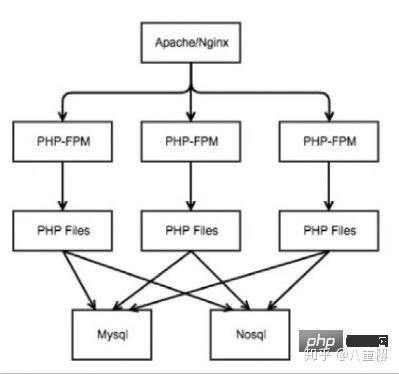
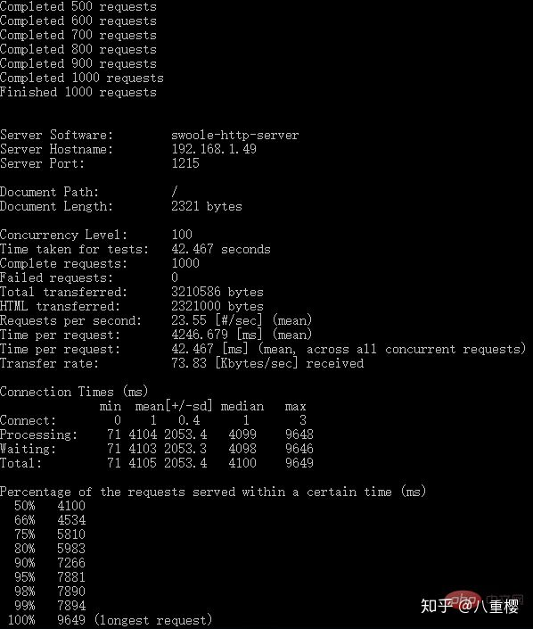

本篇文章给大家带来的内容是关于swoole运行模式加速laravel应用的详细介绍，有一定的参考价值，有需要的朋友可以参考一下，希望对你有所帮助。
一、Swoole
Swoole号称重新定义了PHP，它是一个PHP扩展，使得PHP可以使用异步的方式执行，就像node一样，而且还能使用socket，为PHP提供了一系列异步IO、事件驱动、并行数据结构功能。
Swoole4支持完整的协程编程模式，可以使用完全同步的代码实现异步程序。PHP代码无需额外增加任何关键词，底层自动进行协程调度，实现异步IO 。
nodejs能实现的swoole几乎都能实现，而且性能比nodejs更高，毕竟nodejs是单线程的无法充分发挥cpu性能，swoole是多线程的可以充分发挥cpu的性能。
Swoole高效跟传统的web开发有什么区别，除了传统的LAMP/LNMP同步开发模式，swoole的异步开发模式是怎样的，如何保持高效？
二、传统web开发模式
PHP web开发采用的方式是LAMP/LNMP架构，即Linux、Nginx，Mysql和PHP。这里以nginx来举例，大致结构为：

当请求进入时，web server将请求转交给PHP-FPM,PHP-FPM是一个进程池架构的FastCGI服务,内置PHP解释器。FPM负责解释执行PHP文件生成响应，最终返回给web server，展现至前端。PHP文件中实现了许多业务逻辑，包括Mysql和Nosql的访问，调用第三方应用等等。
这样的结构php-fpm和nginx的配合已经运行得足够好,但是由于php-fpm本身是同步阻塞进程模型,在请求结束后释放所有的资源（包括框架初始化创建的一系列对象）,导致PHP进程“空转”（创建<-->销毁<-->创建）消耗大量的CPU资源,从而导致单机的吞吐能力有限。
每次请求处理的过程都意味着一次PHP文件解析，环境设置等不必要的耗时操作PHP进程处理完即销毁，无法在PHP程序中使用连接池等技术实现性能优化。
三、Swoole运行模式
针对传统架构的问题，swoole从PHP扩展出发，解决了上述问题，对于swoole的进程模型，我们已经了解过了。
相比于传统架构，Swoole进程模型最大的特点在于其多线程Reactor模式处理网络请求，使得其能轻松应对大量连接。
除此之外的优点还包括：
全异步非阻塞，占用资源开销小，程序执行效率高
程序运行只解析加载一次PHP文件，避免每次请求的重复加载
进程常驻，使得连接池和请求之间信息传递等的实现成为可能
四、为什么要在 Swoole 上运行 Laravel?
Laravel框架启动的时候需要加载很多文件，再加上其出了名的生态环境好，所以在开发过程中我们就会发现有非常多的已经造好的轮子，这也就使得Laravel的一次启动的磁盘IO特别高（就是要加载很多文件嘛）
laravel生命周期需要在每次请求的时候都执行一遍。因为单个请求创建的环境在请求执行结束后会立即销毁。
换句话说， 在传统的 PHP 生命周期中， 为了脚本执行而浪费了大量的时间去创建和销毁资源。想象一下像 Laravel 这样的框架， 在每次请求中需要加载多少文件? 同时也浪费了大量的 I/O 操作。
因此如果我们利用 Swoole 内置一个应用级别的 Server， 并且所有脚本文件在加载一次之后便可以保存在内存中呢？ 这就是为什么我们需要尝试在 Swoole 上运行 Laravel。 Swoole 可以提供强大性能而 Laravel 则可以提供优雅代码结构使用。这俩儿真是完美组合 !
五、使用Swoole提升Laravel的性能
在现有的轮子中，感觉下面这两个还是非常不错的，可以自行选择
swooletw/laravel-swoole
garveen/laravoole
本人选择了第一个来测试
使用composer安装：
composer require swooletw/laravel-swoole
如果你使用的是laravel，那么在 config/app.php 的 providers 数组中加上
SwooleTW\Http\LaravelServiceProvider::class,
如果你使用的是lumen，那么在 bootstrap/app.php 中加入如下代码
$app->register(SwooleTW\Http\LumenServiceProvider::class);
将配置文件导出到 config 目录下
php artisan vendor:publish --provider="SwooleTW\Http\HttpServiceProvider"
然后可以去 config/swoole_http.php 中配置信息
'server' => [
'host' => env('SWOOLE_HTTP_HOST', '0.0.0.0'),//监听任意ip
'port' => env('SWOOLE_HTTP_PORT', '1215'),
'options' => [
'pid_file' => env('SWOOLE_HTTP_PID_FILE', base_path('storage/logs/swoole_http.pid')),
'log_file' => env('SWOOLE_HTTP_LOG_FILE', base_path('storage/logs/swoole_http.log')),
'daemonize' => env('SWOOLE_HTTP_DAEMONIZE', 1),//1-程序将转入后台作为守护进程运行
],
],
swoole_http.php 里还提供配置 providers 数组，
'providers' => [
// App\Providers\AuthServiceProvider::class,
]
因为使用swoole作为http后，这些providers会被存到内存中，所以这里配置的是每次请求都想要重新注册和重新启动的providers。
现在，你可以执行以下的命令来启动 Swoole HTTP 服务。
$ php artisan swoole:http start
然后你可以看到以下信息：
Starting swoole http server...
Swoole http server started: <http://0.0.0.0:1215>
现在可以通过访问 http://127.0.0.1:1215 来进入 Laravel 应用。
注意：该拓展是不支持热启动的，所以每次有代码更新都要重启服务 php artisan swoole:http restart
六、性能测试
使用Apache的ab测试工具
ab -n 1000 -c 10 http://127.0.0.1:1215/
参数说明：-n 1000个请求 -c 10个并发数

图一是使用swoole作为应用服务器，图二是apache服务器
测试环境在虚拟机中，电脑配置也较差，性能没有完全发挥出来，可以看到apache只完成197次请求就扛不住压力了，swoole HTTP服务 完成了压测，性功完全碾压apache服务器。
七、使用Nginx代理
swoole在官网也提到过：swoole_http_server对Http协议的支持并不完整，建议仅作为应用服务器。并且在前端增加Nginx作为代理。
那么，我们就增加需要配置nginx.conf里的server：
1 server {
2
3 listen 80;
4
5 server_name your.domain.com;
6
7 root /path/to/laravel/public;
8
9 index index.php;
10
11
12
13 location = /index.php {
14
15 # Ensure that there is no such file named "not_exists"
16
17 # in your "public" directory.
18
19 try_files /not_exists @swoole;
20
21 }
22
23
24
25 location / {
26
27 try_files $uri $uri/ @swoole;
28
29 }
30
31
32
33 location @swoole {
34
35 set $suffix "";
36
37
38
39 if ($uri = /index.php) {
40
41 set $suffix "/";
42
43 }
44
45
46
47 proxy_set_header Host $host;
48
49 proxy_set_header SERVER_PORT $server_port;
50
51 proxy_set_header REMOTE_ADDR $remote_addr;
52
53 proxy_set_header X-Forwarded-For $proxy_add_x_forwarded_for;
54
55
56
57 # IF https
58
59 # proxy_set_header HTTPS "on";
60
61
62
63 proxy_pass http://127.0.0.1:1215$suffix;
64
65 }
66
67 }
配置可参考swoole方文档官 Nginx/Apache配置
至此，大功告成，你可以像平常一样访问你的网站了。
八、使用swoole和传统php开发的缺点
本文主要介绍了使用swoole作为laravel的应服务器，最后说下使用swoole和传统php开发的缺点。
1、更难上手。这要求开发人员对于多进程的运行模式有更清晰的认识
2、更容易内存泄露。在处理全局变量，静态变量的时候一定要小心，这种不会被GC清理的变量会存在整个生命周期中，如果没有正确的处理，很容易消耗完所有的内存。在php-fpm下，php代码执行完内存就会被完全释放。
以上就是swoole运行模式加速laravel应用的详细介绍的详细内容